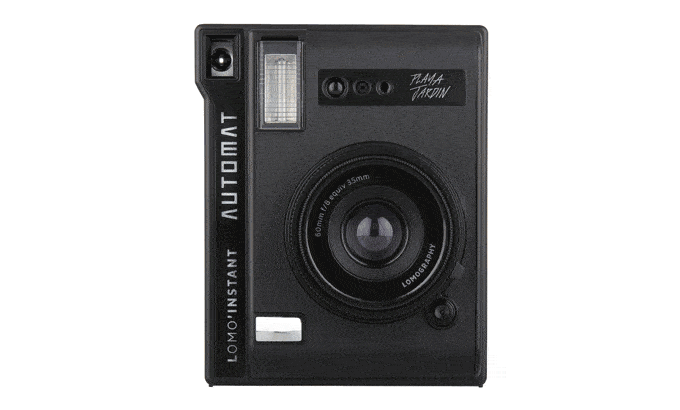
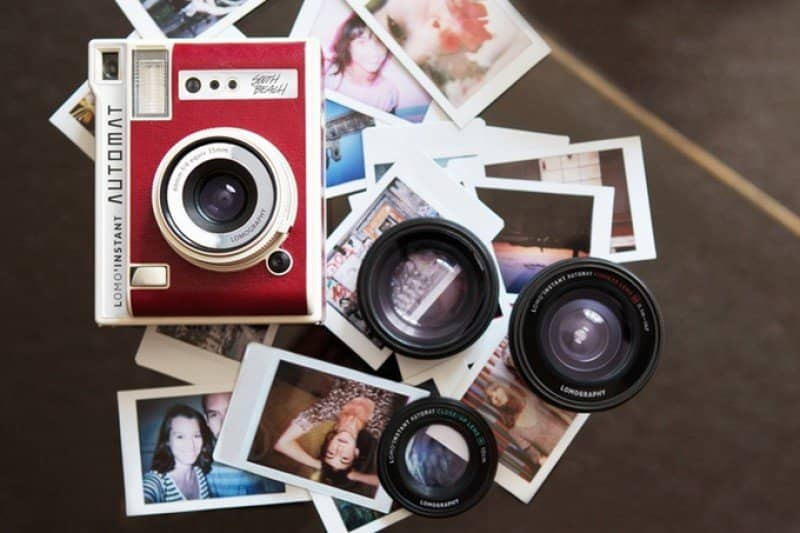
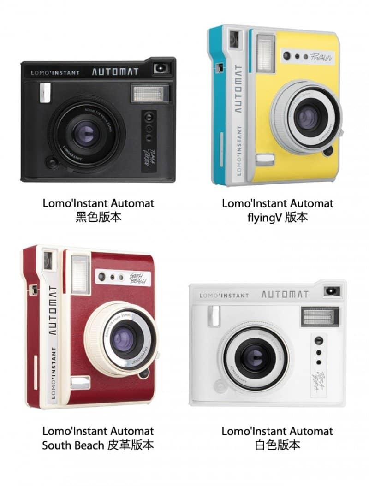

謝謝大家的支持，Lomo'Instant Automat 拍立得相機已成功集資，目前生產進度十分理想，預計於 2016 月 12 月送出所有回饋。目前亦於 Lomography 網上商店開放預購，錯過了 flyingV 專案的朋友可《按此》預購。
假如對本公司之商品有銷售代理之興趣，歡迎以電郵聯繫 orders-asia@lomography.com。
Lomo’Instant Automat，你每日的即時靈感之源。
- 最強大的拍立得相機：全新設計的終極拍立得系統，令 Lomo'Instant Automat 的快門速度、光圈設定和閃光燈強度都能夠在任何光線的情況下自動調節，無可挑剔的進行拍攝。
- 最具代表性的創意功能：打破攝影每個界限，為你帶來超現實的藝術創意和簡單快拍！Lomo’Instant Automat 以無限重曝、長時間曝光、外置鏡頭、遙控快門等，進一步提昇攝影創意。
- 由內至外、外至內的精心設計：輕巧、聰明及迷人的 Lomo’Instant Automat 內外兼備，還有 4 款不同的時尚設計，加上豐富的配件套裝，讓你的攝影靈感源源不絕。
- 快速簡單的對焦模式：擁有簡易的三段對焦模式，讓你可以快速對焦並拍下最重要的瞬間！
- 再度光榮回歸集資平台：有著過去 5 個成功並按時完成發貨的集資計劃，我們已準備好接受全新的 flyingV 集資挑戰，同時帶來豐厚優惠及禮遇給每一位支持者。
按下快門，瞬間跳進創意領域
Lomo’Instant Automat 相機與其他拍立得相機截然不同。Lomo’Instant Automat 不但完全自動，而且具備不同的創意功能，用法簡單方便，非常適合攝影新手甚至攝影專家使用。其他技術考慮就放心交托給我們照顧，你可以忘記晝夜，捕捉生活的瞬間。
Lomo'Instant Automat 保留了 Lomo'Instant 所有創意功能的同時，加入了四大新功能— 全自動曝光系統、三段區域對焦、LED 底片數量提示燈及遙控快門！體積上也更進一步，能輕巧易攜。Lomo'Instant 家族成員各有千秋：
Lomo'Instant Automat
⭕️ 標準 35 mm 鏡頭、可外置廣角及其他鏡頭（需購買連鏡頭套裝）
⭕️ 全自動測光、成功率 100%
⭕️ 新增 LED 底片提示燈、可遙控快門
⭕️ 標誌式的創意功能
⭕️ 使用 Fujifilm Instax Mini 底片（卡片大小）
⭕️ 全自動測光、成功率 100%
⭕️ 可遙控快門
⭕️ 標誌式的創意功能
⭕️ 可換兩款鏡頭 （需購買連鏡頭套裝）
⭕️ 使用 Fujifiln Instax Wide 底片、大小為 Instax Mini 的兩倍
創意，從此變得容易
拍攝摸式
Lomo’Instant Automat 的兩種拍攝模式，讓你可以在任何情況下都能夠完美捕捉畫面。想跟朋友進行自拍？或是進行偉大的實驗創作？Lomo’Instant Automat 都能夠讓你的夢想成真！
- 自動拍攝模式：把 Lomo’Instant Automat 切換至自動拍攝模式（A），相機便會因應環境自動調節快門速度、光圈設定以及閃光燈功能。Lomo’Instant Automat 配備 f/8 及 f/22 光圈。
- 創意拍攝模式（B 快門）：對夜貓子來說，B 快門創意拍攝模式可讓你進行長達 30 秒的長時間曝光。在昏暗環境及晚上使用，創作好玩又漂亮的光影塗鴉最適合不過！

史上最具創意的功能及配件
Lomo’Instant Automat 是最具創意拍立得相機，Combo 連鏡頭套裝更包括三款不同鏡頭，讓創意無限滾動！
- 內置鏡頭：Lomo’Instant Automat 內置鏡頭的等效焦距為 35mm，適合隨時隨地率性拍攝。
- 關閉閃光燈：想把閃光燈關上來拍攝自然光源的照片？沒問題，一切在你掌握內！
- 備有遙控快門功能的鏡頭蓋：無論是一大班朋友合照或一個人旅行，想拍照再不用假手於人。
- 無限制多重曝光：曝光一次恐怕不足以表達當下的每個細節。這時就是切換至多重曝光模式拍攝的時候了！
- 曝光補償 +/- 1：讓你因應環境的光線強弱進行曝光補償。
- 底片數目 LED 提示燈：查看 LED 提示燈便可以立即知道相機餘下底片數目。
- 外置廣角鏡頭：能捕捉比你肉眼看到更廣闊的畫面，視野擴充達 90°。外置廣角鏡的等效焦距為 21mm，讓你拍攝近至 0.3 米對焦距離的超級近攝照，最適合一大班人的群體自拍照。（隨鏡頭套裝附上）
- 外置魚眼鏡頭：能拍下最具創意的 170° 魚眼照片，讓你拍攝近至 10cm 對焦距離的超級銳利之圓泡形魚眼影像，帶來無窮樂趣和驚喜！（隨鏡頭套裝附上）
- 外置近攝鏡頭：近攝鏡頭讓你拍下最銳利的每個細節，近至 10cm 的對焦距離。（隨鏡頭套裝附上）
- 可替換顏色濾片： 隨機附送四款顏色濾片，讓你把相機功能發揮到極致！
- 附送不同小配件：還有更多小配件任由你展開無限想像──攝影秘技卡、紙相框及磁石貼均隨 Lomo’Instant Automat 相機附上，讓你輕鬆展示心愛的拍立得之作！
- 使用 Fujifilm Instax Mini 底片：使用市面上常見的 Fujifilm Instax Mini 底片，大小如信用卡一樣，最適合放在錢包或在牆上展示了！想買到 Fujifilm Instax Mini 底片，可看看相機連底片套裝，或是於 Lomography 網上商店 及世界各地的 Gallery Store 門市 選購。
設計
外形輕巧的 Lomo’Instant Automat 剛好可以放在口袋裡，便於隨時隨地拍攝。Lomo’Instant Automat 備有 4 款不同的時尚款式可供選擇。
LOMOGRAPHY 與拍立得攝影
Lomography 一直鍾情拍立得攝影。簡單按下快門，就能瞬間捕捉一刻的樂趣。拍立得照片非常適合掛在牆上欣賞，或是贈予摯友分享。不同於那幾百張儲存在手機的照片──拍立得都是實在的、有質感的回憶。利用拍立得分享快樂，傳遞愛的訊息，對我們來說，這就是攝影的意義。
所以 Lomography 費盡心思研發及壯大 Lomo'Instant 拍立得相機系列。先有輕巧而有著多種玩法的 Lomo'Instant 相機，及後我們帶來了更高階、同樣有不同創意功能的 Lomo'Instant Wide 相機。現在我們要將拍立得攝影體驗再度提升。結合了 Lomo'Instant 及 Lomo'Instant Wide 的優點再加入全新功能，Lomo'Instant Automat 是集大成的拍立得相機。
不論新手或是攝影達人都能輕鬆使用 Lomo'Instant Automat。它能自動調節光圈、快門及閃光燈輸出，確保你的照片在不同環境下擁有完美曝光。有精心設計的輕巧外型，包羅萬有的創意功能並且簡單使用。我們照顧你所有技術層面的考慮，你便可以放心去發揮創意，捕捉美妙的瞬間並隨時隨地與人分享。

技術規格
適用底片：Fujifilm Instax Mini 拍立得底片
照片曝光範圍：62mm x 46mm
內置鏡頭焦距： 60mm （相等於 35mm ）
自動曝光系統：程式自動曝光 光圈：f/8 、f/22
快門速度：手動 B 快門 （B 快門模式：最長30秒）、1/250 - 8 秒 （自動拍攝模式）
曝光補償：+ 1 / - 1 EV （現場光）
出片裝置：電動
多重曝光功能： 有
內置閃光燈指數： 9 (m)
內置閃光燈：自動電子閃光燈，可設置無閃燈模式
最近對焦距離： 0.6m
三段式對焦：0.6m／1-2m／無限遠
三腳架孔：有
快門遙距控制：紅外線傳輸
底片數目顯示：LED 燈提示，倒數
電池型號： 2 枚 CR2 電池（2 x 3V）
遙控電池型號： 1 枚 CR1632 電池（3V）
濾鏡螺紋直徑：43mm
鏡頭及配件規格
內置鏡頭－焦距 : 60mm （相等於 35mm）
外置廣角鏡頭－鏡頭相等焦距：21mm / 鏡頭視角：90° / 最近對焦距離： 0.3 m / 鏡頭接口：43mm 螺紋
外置魚眼鏡頭－鏡頭視角：170° / 最近對焦距離： 10cm / 鏡頭接口：43mm 螺紋
外置近攝鏡頭－最近對焦距離： 10cm / 鏡頭接口：43mm 螺紋（所有外置鏡頭包括在鏡頭套裝中）
配件（包括在單機或連鏡頭套裝）－顏色濾片、照片夾、雙面貼紙、磁石貼及拍攝秘技卡
支持我們創造最棒的拍立得相機
感謝支持 LOMO'INSTANT 家族
Lomography 是什麼
加購皇牌拍立得相機
發貨詳情（本地免運）
風險與變數
早前我們成功地完成第二個 flyingV 專案。在過去的幾年裡，我們一直努力將 Lomo'Instant Automat 相機這個計劃實現。但是，亦我們清楚知道每個項目總有風險。我們致力為你提供一個完美的產品，盡一切努力滿足你的期望。第一批產品預計將於 2016 年 12 月送出，我們與生產商緊密合作，確保生產順利並準時送出。每當有最新消息，我們必定會第一時間通知你。我們已完全準備好這個令人興奮的挑戰，希望你能加入我們，完成這個驚人的項目！